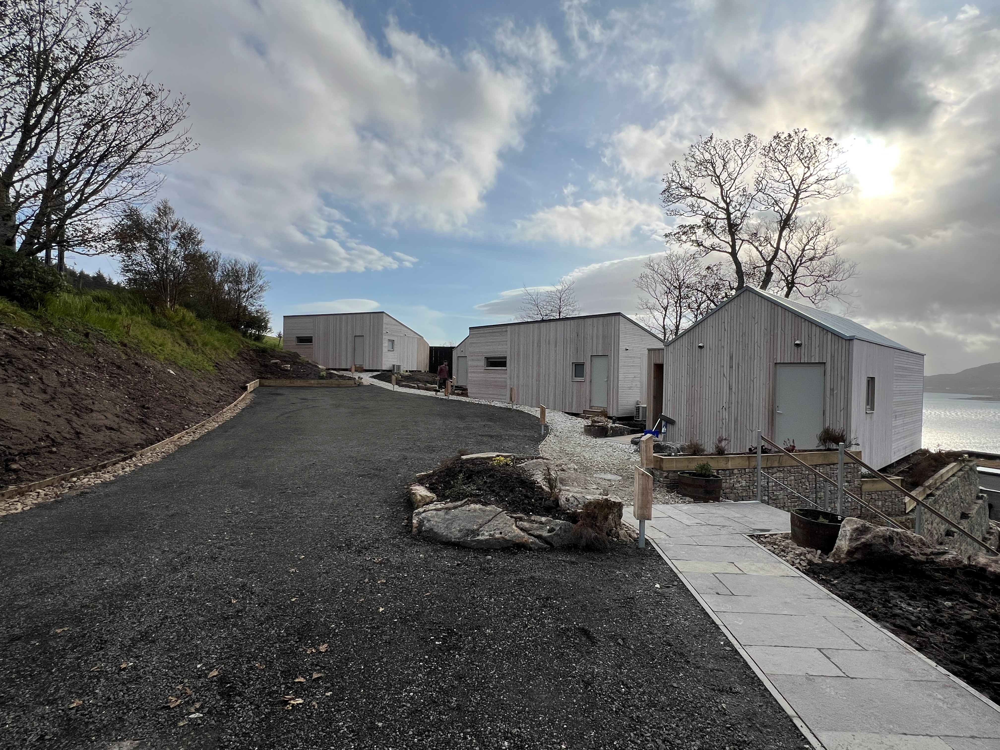
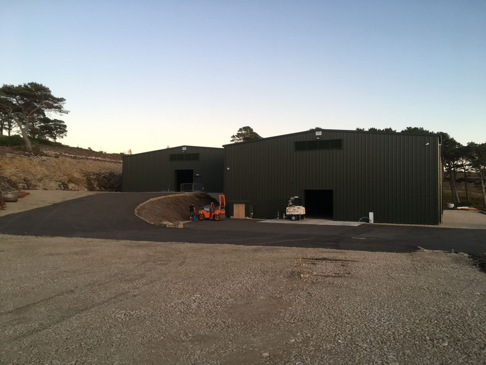

Skye & Lochalsh · Highlands & Islands
Delivering exceptional projects across Skye & Lochalsh. From concept to completion, we build with integrity and pragmatism on every project.
View Our Work
Tòrr Civils & Building Ltd are a multi-discipline main contractor based on the Isle of Raasay. We have grown through repeat business and a reputation for delivering pragmatic, sensible solutions across residential, commercial and infrastructure projects. Straightforward and easy to work with.
Operating across some of Scotland's most challenging terrain — we bring the equipment, expertise and attitude to get the job done, wherever the site may be.
We deliver what our clients need, with the least hassle possible. Operating from the Isle of Raasay is like altitude training for construction management — the easy answer has rarely been available to us, so our problem-solving has been honed through the daily realities of unpredictable weather, coordinating trades, sourcing materials and working around CalMac. The constraints that could trip up a contractor used to easy access are just normal to us. Whatever the project, we will work with you to understand what you need and find the right solution. Our breadth of experience across disciplines gives us the depth to take on projects where others may struggle.